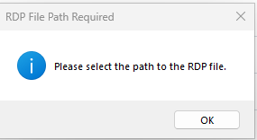
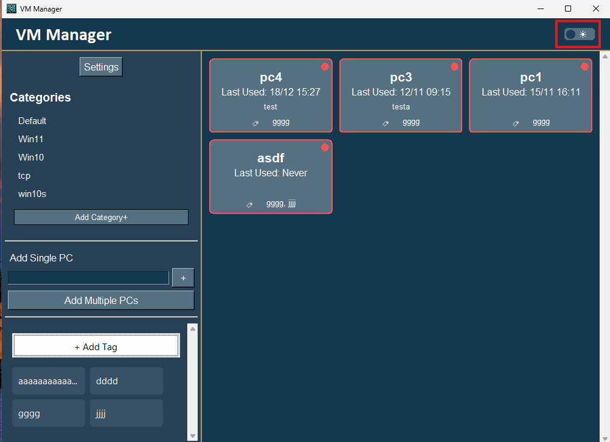
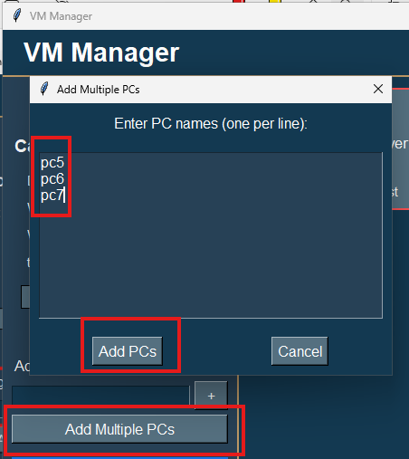
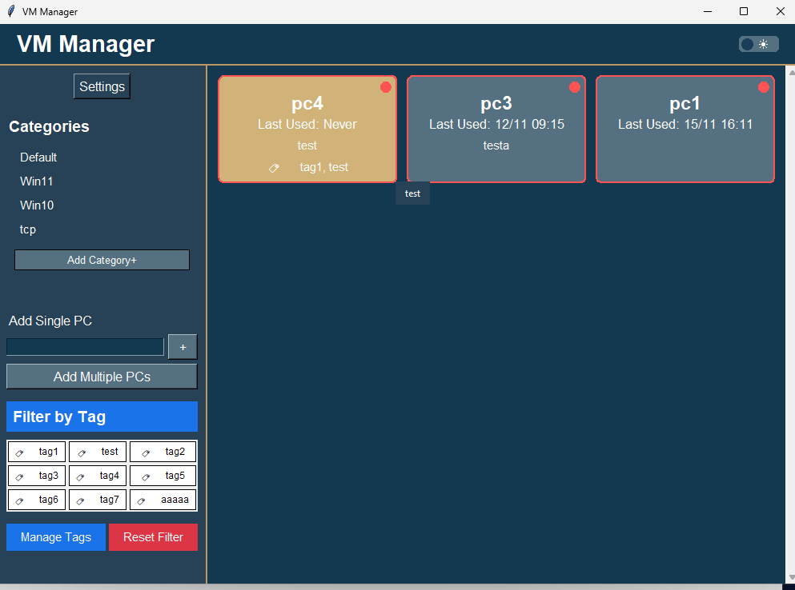

VM Manager - How To Guide
Table of Contents
- Initial Setup
- Adding Virtual Machines
- Managing Categories
- Managing Tags
- Connecting to Machines
- Managing Machines
- Customizing Settings
- Sharing Machines
- Tips and Tricks
Initial Setup
First Launch
When you first launch VM Manager, you'll be prompted to select a default RDP file:

- Click "OK" on the prompt
- Browse to select your default RDP file
- The application will create necessary folders automatically
Theme Selection
VM Manager supports both light and dark themes:

- Click the theme toggle (‚òÄÔ∏è/üåô) in the header
- Theme changes apply immediately
- Selection persists between sessions
Adding Virtual Machines
Adding a Single Machine
You can add machines one at a time using the sidebar:

- Enter the machine name in the "Add Single PC" field
- Click "Add PC"
- The machine will appear in the main view
Adding Multiple Machines
For batch additions:

- Enter machine names in the text area (one per line)
- Click "Add PCs"
- All machines will be added to the main view
Managing Categories
Creating and Managing Categories
To organize your machines into categories:

- Click "Manage Categories" in the sidebar
- Add a new category:
- Click "Add Category"
- Enter category name
- Choose category color (optional)
- Click Save
- Assign machines to categories:
- Right-click any machine
- Select "Set Category"
- Choose from available categories
- Filter by category:
- Click category name in sidebar
- View only machines in that category
- Click "All Machines" to clear filter
Category Organization
Tips for effective category management:
- Use clear, descriptive category names
- Assign colors for visual organization
- Categories can be nested (subcategories)
- Machines can belong to multiple categories
- Categories can be edited or deleted through the management panel
Managing Tags
Creating and Managing Tags
To use the tagging system:

- Add tags:
- Click "Manage Tags" in the sidebar
- Enter new tag name in the input field
- Click "Add Tag" or press Enter
-
Tags will appear in the list above
-
Assign tags to machines:
- Right-click any machine
- Select "Tags"
- Check the tag from the list to assign it. To remove a tag, click on it again.
-
Changes are saved automatically
-
Filter by tags:
- Click tags in the sidebar to filter
- Select multiple tags to see machines with any of those tags
- Click "Reset Filter" to clear all tag filters or click on the tag name in the sidebar
Tag Organization Tips
- Use consistent naming conventions
- Keep tags simple and descriptive
- Regular cleanup of unused tags
- Use tags alongside categories for better organization
Managing Existing Tags
- View all tags in the tag manager
- Delete tags using the × button next to each tag
- Deleting a tag removes it from all machines
Connecting to Machines
Basic Connection
To connect to a machine:

- Click on any machine tile
- The RDP connection will launch automatically
- Status indicator shows if machine is available (green) or unavailable (red)
Custom RDP Connections
To use a specific RDP configuration:

- Right-click the machine
- Select "Set RDP Path"
- Choose your custom RDP file
- Future connections will use this configuration
Managing Machines
Context Menu Options
Right-click any machine to access management options:

- Add/Edit Description
- Set Custom RDP Path
- Share Machine Configuration
- Delete Machine
Adding Descriptions
To add a description:

- Right-click the machine
- Select "Add or Edit Description"
- Enter your description
- Click OK
Customizing Settings
Settings Panel

Access application settings:

- Click the Settings button in the sidebar
- Settings are organized into categories:
- Machine Settings:
- Default RDP File: Choose a different RDP template file
- Machine sharing options
- Custom RDP configurations
- Application Settings:
- Status Refresh Interval: Control check frequency
- Data Directory: Change storage location
- Theme preferences
- User Preferences:
- Display options
- Behavior settings
- Import/Export:
- Settings backup/restore
- Machine list management
- Shared configurations
Changing Default RDP File
To change the default RDP configuration:
- Open Settings
- Navigate to Machine Settings
- Click "Change Default RDP File"
- Browse to select your new RDP template file
- Click OK to save
Note: This affects new connections only. Existing machine-specific RDP settings are preserved.
Adjusting Status Refresh
To modify how often machine status is checked:
- Open Settings
- Go to Application Settings
- Find the "Status Refresh Interval" setting
- Enter your preferred interval in seconds
- Click Save
Tip: A longer interval reduces network traffic but makes status updates less frequent.
Sharing Machines
Exporting Machine Configurations
To share machine settings with others:

- Right-click the machine you want to share
- Select "Share Machine Configuration"
- Choose which settings to include:
- RDP configuration
- Machine description
- Custom paths
- Click "Export" and choose save location
Importing Shared Machines
To import shared machine configurations:

- Open Settings
- Go to Import/Export section
- Click "Import Shared Configuration"
- Browse to the shared configuration file
- Review and confirm the import
Note: Imported settings will not override existing machines unless specified.
Managing Shared Configurations
To manage your shared machines:
- Open Settings
- Navigate to Import/Export
- View shared configuration history
- Remove old shared configurations
- Update sharing preferences
Tips and Tricks
Status Monitoring
- Green indicator: Machine is available
- Red indicator: Machine is unavailable
- Last used time updates automatically
Keyboard Shortcuts
Enterin single machine field to quickly add- Right-click for context menu
- Mouse wheel to scroll through machines
Ctrl+Sto quickly share selected machineCtrl+Ito import configurationsCtrl+Eto export settings
Best Practices
- Use descriptive names for machines
- Add descriptions for better organization
- Regular exports for backup
- Customize RDP settings for specific needs
- Share configurations with team members
- Keep shared configurations organized
- Review and update machine settings periodically
Troubleshooting Common Issues
- Connection Problems
- Verify machine name
- Check network connectivity
-
Confirm RDP port access
-
Sharing Issues
- Verify file permissions
- Check configuration completeness
-
Ensure compatible settings
-
Settings Issues
- Clear application cache
- Verify write permissions
- Check available disk space
For additional support, consult the full documentation or contact support.